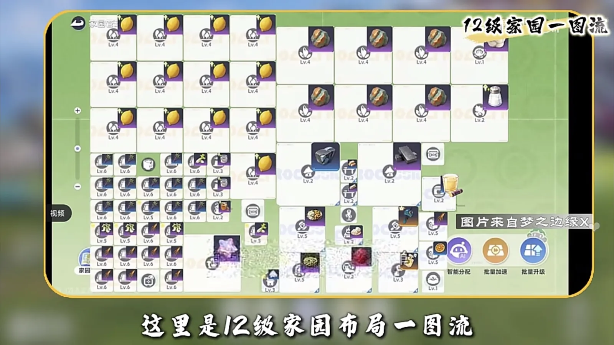
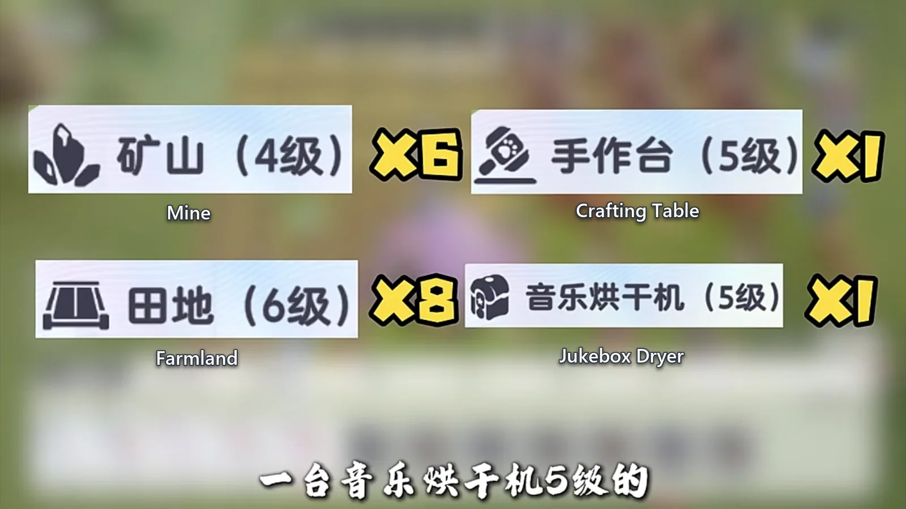
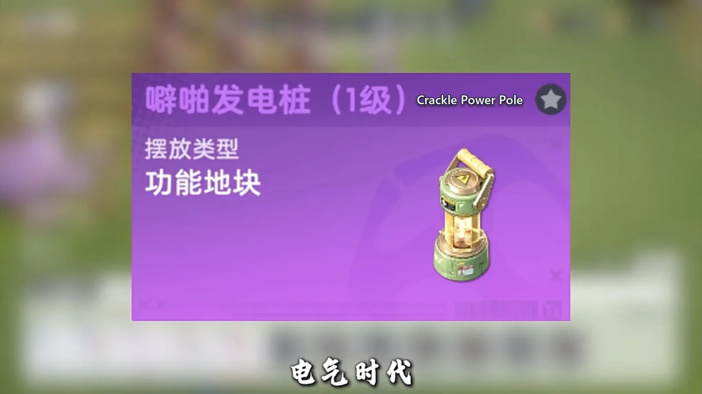
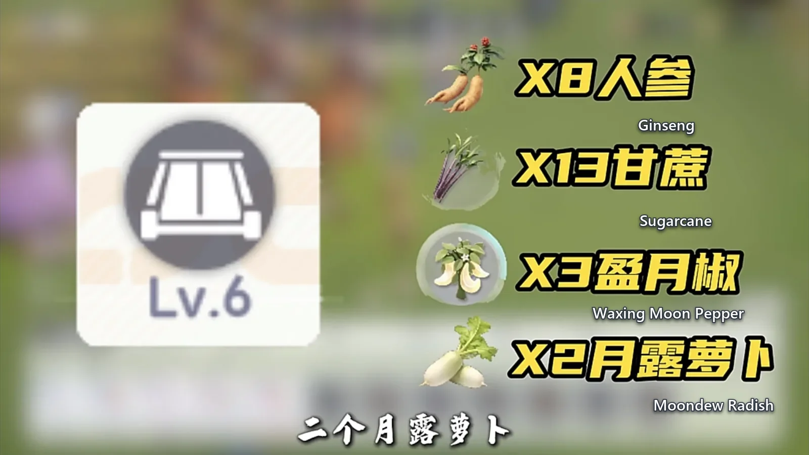
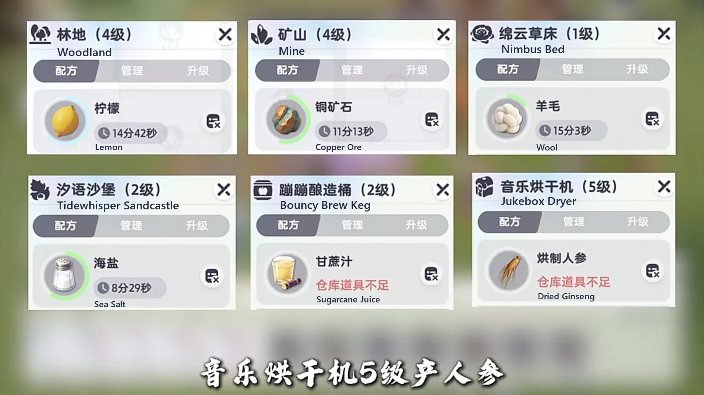
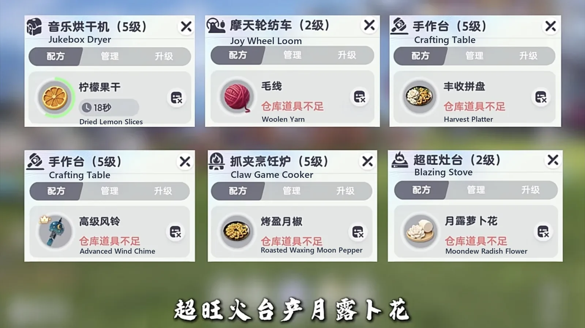
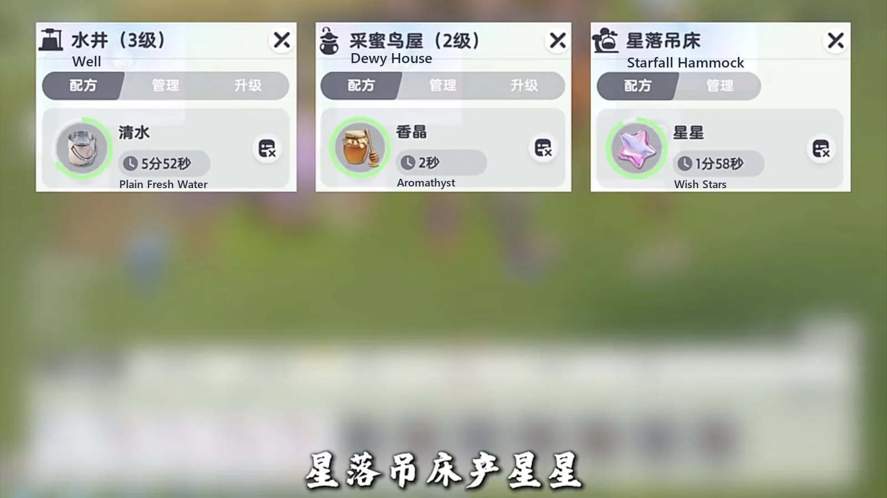

Home首页 / Guides攻略 / The Level 12 Homeland Layout: 26 Plots, Six Mines and a Recipe on Every Machine《伊莫》十二级家园最优摆放方案
Checked核对于 October 28, 20262026 年 10 月 28 日
The Level 12 Homeland Layout: 26 Plots, Six Mines and a Recipe on Every Machine《伊莫》十二级家园最优摆放方案
A whole level 12 base: the four upgrades that come first, the 26 plots split four ways, one recipe on every machine, and the 450 W line the electrical grid has to stay under.十二级家园的整套摆放：先升哪四样、二十六块田怎么分四种作物、每台设施各挂什么配方，以及电网为什么要压在 450 瓦以内。
Level 12 is the Homeland's first industrial revolution. The Power Module and the Crackle Power Pole open at this level, and the gain is not only more output — it is people. Aniimo that were standing on plots can come off the fields and go into the Homebuilding Zone to make Wish Stars, so the same base earns twice from the same roster. Materials and stars are both tight the moment you arrive, which is why the order below is not negotiable: build the floor first, arrange second.十二级是家园的第一次工业革命。电力模块和噼啪发电桩在这一级解锁，你一步跨进电气时代，好处不只是产出变多 —— 真正赚的是人：原本守在地块上的伊莫可以撤下来，全扔进住宅区去产许愿星。刚升上来的时候材料和星星都紧，所以顺序不能反，先把底子打出来，再动摆放。
What follows is one arrangement for a level 12 base: the four upgrades to make before anything is placed, the 26 plots split four ways, one recipe on every machine, and the two settings the base is left on. Six mines at level 4, eight fields at level 6, one Crafting Table and one Jukebox Dryer at level 5 — the rest of the layout stands on those four.下面这一套是十二级家园的一种排法：动手摆之前先升的四样、二十六块田怎么分成四种作物、每台机器各挂一条配方，以及基地最后定住的两个档位。六座矿山四级、八块田地六级、一台手作台和一台音乐烘干机五级 —— 整套摆放就立在这四样上。

First these four upgrades, everything else after一、先升这四样，别的都往后排
The first thing to do at level 12 is not decorating; it is filling four slots:升到十二级第一件事不是装修，是把四个坑填满：
- Six mines, all taken to level 4.矿山六座，全部点到 4 级。
- At least eight fields taken to level 6.田地至少八块点到 6 级。
- One Crafting Table taken to level 5.手作台一台到 5 级。
- One Jukebox Dryer taken to level 5.音乐烘干机一台到 5 级。
What you are short of early is Modification Toolkits. This layout only leans on those few facilities, so aim the modules at them and do not spread them across buildings that do nothing for the base.前期最缺的是改装工具包。这套布局只认那几样设施，模块就优先往它们身上点，别摊到用不上的地方去。
Toolkits come from two places. One is the Homeland's own level-ups. The other you farm: buy a piece of furniture you have never owned, put it down, pick it back up, and the toolkit comes with it. So do not hoard — every time you see a piece you have never bought, buy one and place it.工具包就两条来路。一条是家园升级自己解锁，另一条得自己去刷：买一件没买过的家具，摆到地上再回收，工具包就到手了。所以别攒着，看见没买过的家具就买一件、摆一下。

Reserve the Carousel Mill's footprint first二、位子先给旋转木马磨坊留出来
On a level 12 board the first thing to read is not what is placed but what is left empty. Carousel Mill's footprint goes down first and everything else fills in around it; build the fields first and the mill ends up wherever there happens to be a gap, which is never where you want it.十二级的布局一图流，第一眼要看的不是摆了什么，而是空着什么。旋转木马磨坊的位子先留出来，剩下的再往里填；先摆地的话，磨坊只能塞进碰巧剩下的那个格子，而那个格子从来不是它该在的地方。
Three things do not have to be forced in — it depends whether you want what they make: a Claw Game Cooker, a Phonolfactory Table and a Pickling Jar. If you are short of that food, place them; if not, keep the squares for farmland.有三样东西不必硬塞，看你要不要那份产出：一个抓夹烹饪炉、一个留声制香台、一只风味腌制罐。缺那口吃的就放，不缺就把格子省下来给地块。
Keep the grid under 450 W三、电力压在 450 瓦以内
The mode switch only touches one class of facility: the Claw Game Cooker and the Bouncy Brew Keg stay on normal, and everything else goes over to power.模式这一层只改一类设施：抓夹烹饪炉和蹦蹦酿造桶留在普通模式，其余全部切成电力模式。
The red line is 450 W. At or under 450 W the efficiency is 120%; cross it and the rate drops straight back to 100%, so every watt past the line is burned for nothing.电力的红线在 450 瓦。压在 450 瓦以内，效率是 120%；一旦越过去，立刻掉回 100%，多出来的那部分电等于白烧。

Get the personalities right, and keep the Prismana busy四、性格要抓对，虹光伊莫别闲着
Get each Aniimo's personality right — every later Homeland level keeps asking for it, so the earlier you line them up the less you redo. Extra Prismana Aniimo should not sit idle: put them in the base and they lift its efficiency. If you have none at all, go and push the star rank in the Homebuilding Zone first.伊莫的性格尽量抓对，这件事后面家园升级一直受用，越早对上越省事。多出来的虹光伊莫别让它闲置，放进家园就能提效率。一只虹光伊莫都没有，就先去住宅区把星星的等级顶上去。
Once the housing zone is full and ten Prismana Aniimo are in place, remember to collect the stars twice a day.住宅区拉满、十只虹光伊莫都到位之后，一天记得收两次星星。
26 plots, four crops, none of them empty五、26 块田地，四种作物分完
There are 26 plots and not one of them is left empty:田地一共 26 块，一块也不空着：
- 8 level 6 plots on ginseng, with a Cooling Unit covering them on its first notch.8 块六级田种人参，用制冷机覆盖，制冷机开一级冰。
- 13 plots on sugarcane, with a Heat Furnace covering them on its second notch.13 块种甘蔗，用热能炉覆盖，热能炉开二级火。
- 3 plots on Waxing Moon Pepper.3 块种盈月椒。
- 2 plots on Moondew Radish.2 块种月露萝卜。

Every woodland grows lemons, and you speed them up whenever you have the time — wood blocks are the thing you are always short of. Every mine digs copper ore.林地全部种柠檬，有时间就加速 —— 木块非常缺。矿山全部采铜矿石。
One recipe on every machine六、加工线一条一条排
The last step is to put a recipe on every facility and leave none of them idling:最后是把每台设施都挂上配方，别留任何一台空转：
| Facility设施 | What it makes产物 |
|---|---|
| Nimbus Bed绵云草床 | Wool羊毛 |
| Tidewhisper Sandcastle汐语沙堡 | Sea Salt海盐 |
| Bouncy Brew Keg蹦蹦酿造桶 | Sugarcane Juice甘蔗汁 |
| Jukebox Dryer音乐烘干机 | Dried Ginseng at level 5, Dried Lemon Slices at level 4五级出烘制人参，四级出柠檬果干 |
| Joy Wheel Loom摩天轮纺车 | Woolen Yarn毛线 |
| Well水井 | Plain Fresh Water清水 |
| Dewy House采蜜鸟屋 | Aromathyst香晶 |
| Starfall Hammock星落吊床 | Wish Stars许愿星 |
| Crafting Table, first copy手作台，第一台 | Harvest Platter丰收拼盘 |
| Crafting Table, second copy手作台，第二台 | Advanced Wind Chime高级风铃 |
| Claw Game Cooker抓夹烹饪炉 | Roasted Waxing Moon Pepper烤盈月椒 |
| Blazing Stove超旺灶台 | Moondew Radish Flower月露萝卜花 |



Walk the base once before you log off七、放完先查一圈，再收菜
Do not log off the moment the last machine is down. Open each one and check that it is running; anything with no recipe, or with a recipe that has stopped, fix on the spot. When everything checks out, start collecting the next day.摆完别急着下线。挨个点开，看每台设施是不是都在生产，没挂配方的、挂着却停下来的，当场处理掉。全部确认无误，第二天开始收菜。
Get this right and you stop thinking about the base every day: the plots keep shipping, the machines keep converting, the stars climb, and the rest of your time goes to catching Aniimo.这套东西做对之后，你就不用再每天琢磨该摆什么、该种什么了：地块在连续出货，设施在连续加工，星星一天比一天多，剩下的时间拿去抓伊莫。
More guides相关攻略
- The Level 10 Homeland Layout: 22 Fields and One Machine per Recipe《伊莫》十级家园最优摆放方案 — The whole level 10 base laid out: how the 22 farmland plots split across six crops, why every woodland and every mine grows one thing, which machine takes which raw material, and the two temperature settings worth touching.十级家园的整套摆放：二十二块田怎么分成六种作物、十一座林地和五座矿山为什么都只种一样、每台加工设施该接哪条原料线，以及温度只动哪两个档位。
- The Most Profitable Homeland: 400,000 a Night Out of a Level 6 Base最赚钱家园：六级家园一夜进账四十万，就看你怎么派这几只打工伊莫 — How the Homeland actually makes money: the two things that decide how fast a worker is, which Aniimo to station and where each one is caught, and why the warehouse ends up in the middle of the fields.家园到底靠什么赚钱：决定打工伊莫快慢的只有两样东西、每只该去哪儿抓，以及仓库为什么最后要放在田中间。